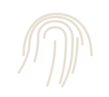

Νέες υποθέσεις
Διηγήματα με ένταση και μυστήριο.
Άνοιγμα φακέλου →Αστυνομική λογοτεχνία • Noir • Μυστήριο
Σκοτεινές υποθέσεις, αιχμηροί χαρακτήρες και ιστορίες που αφήνουν ίχνη.
Άνοιξε την υπόθεση →Διηγήματα με ένταση και μυστήριο.
Άνοιγμα φακέλου →
Σημειώσεις, σκέψεις και στοιχεία.
Διαβάστε →Τα μυθιστορήματα της συγγραφέα.
Δείτε τα βιβλία →Αφηγήσεις, παρουσιάσεις και συνεντεύξεις.
Προβολή →